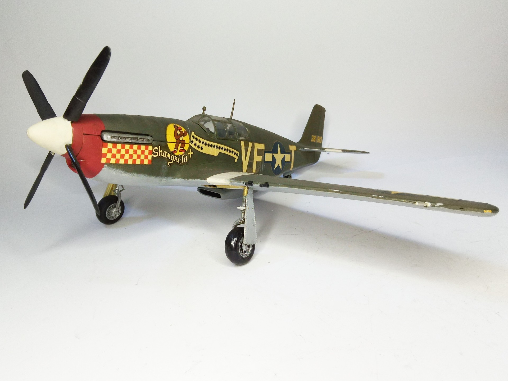
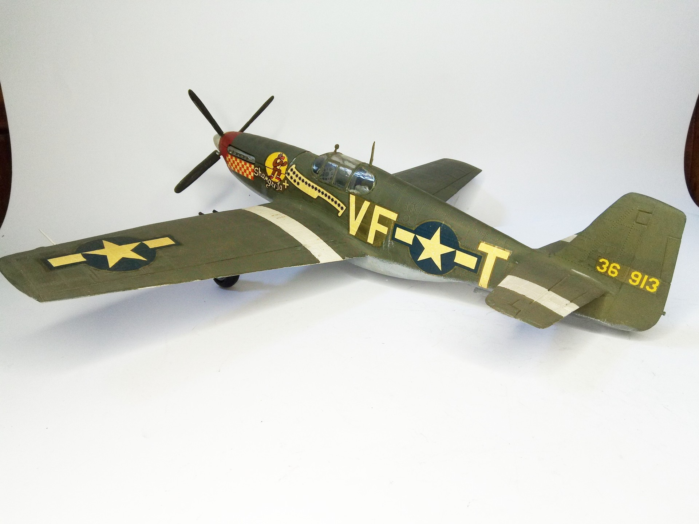

Aerei · scale model archive
North American P51 B Mustang
North American P51 B Mustang — Kit: Revell, Scale: 1/32. Flown by ace Lt. Don Gentile Colorful markings #1/32 #Revell #Mustang

Photo gallery

English description
Flown by ace Lt. Don Gentile
Colorful markings
#1/32 #Revell #Mustang
Descrizione italiana
Pilotato dall’asso Lt. Don Gentile. Insegne molto colorate.